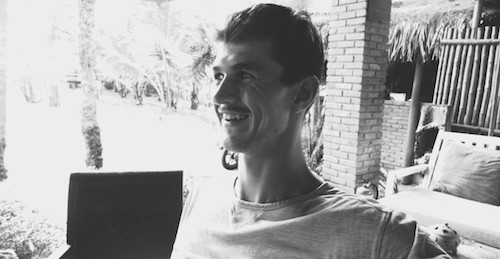

About Me
I am a Londoner who after graduating from Sheffield University with a degree in Mathematics moved to Hanoi, Vietnam. I found a brilliant job at a respected private school teaching Maths to secondary aged students. It has been an incredible 3 years, looking back it’s undoubtably the best decision I’ve ever made and I now have a lifetimes worth of memories and adventures for which I am so grateful for. All beautiful things will eventually come to an end, and as that time draws closer I am now focused on developing some skills which hopefully open up some exciting opportunities in my vibrant home town.
After 3 months and over 100 exercises of Helsinki’s fantastic Java course, my head was turned by the exciting and seemingly slightly more suitable world of web development. The Odin Project was my original aim, but currently everything has been put on hold whilst I train up with Javascript in order to make my application for the Founders & Coders January course in London. Codewars has been my saviour and is responsible for most of my current knowledge as well as many lost, but not wasted, hours.